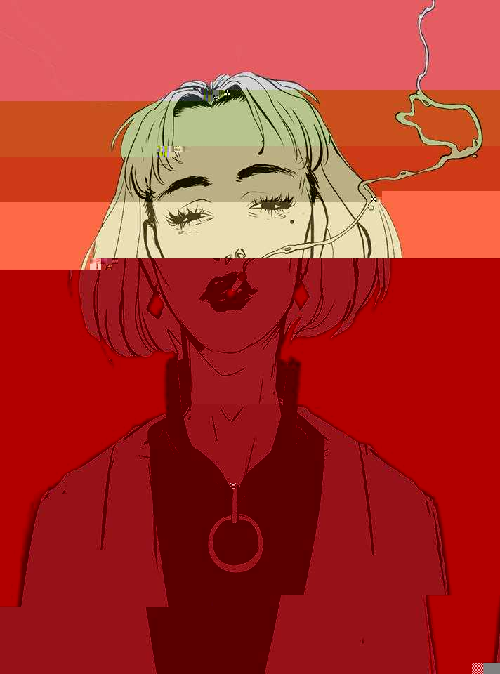

Image Corruption I
Lately I've been toying around with programmatic image corruption. If you're unfamiliiar with the concept, it's essentially the process of changing any image (we'll use this for example)
and converting it to something along the lines of:

The intended affect shown in the 2nd image is achieved by semi-randomly changing hex values in the image. In the glitch art community, this is apparently known as databending. Although there are a few tools out there that can generate corrupted images for you such as:
(Corruptus)
(Corrupt by Snorpey)
I've found that they're complete but woefully undocumented solutions.
In my attempts to wean myself from creating endless amounts of glue code, I've decided to recreate this effect from scratch. That means
No outside libraries (that related directly to image corruption)
No peeking at source from existing libraries.
I'll consider this my first weekly challenge.
I'll be doing a complete writeup (with source on Github) later this week that will hopefully note both the procedure and logic behind .jpg (.gif additionally if I finish early enough) corruption.